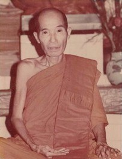

|
BuddhaSasana Home Page |
Vietnamese, with Unicode Times font |
Vi
Diệu Pháp
(Abhidhamma - A-tỳ-đàm - Thắng Pháp)
|
Mục lục tổng quát 1. Tạng Vi Diệu Pháp (Abhidhamma Pitaka)
2. Luận giải
DẪN NHẬP Vi Diệu Pháp xuất phát từ đâu? Theo lịch sữ Phật Giáo thì Vi Diệu Pháp được Ðức Phật thuyết vào hạ thứ bảy tại cung trời Ðạo Lợi (Tam Thập Tam Thiên - Tāvatimsa) với mục đích là độ thân mẫu của Ngài. Theo một vài học giả thì Vi Diệu Pháp không phải do chính Ðức Phật thuyết mà là do các vị Sư uyên bác soạn thảo ra sau nầy. Ðại Ðức Nārada, một nhà học Phật lão thành đã viết: "Ðúng theo truyền thống thì chính Ðức Phật đã dạy phần chính yếu của tạng nầy. Những đoạn ấy được gọi là Ðầu đề (Mātikā) hay nồng cốt nguyên thủy của giáo lý như Pháp Thiện (Kusalā Dhammā), hay Pháp Bất Thiện (Akusalā Dhammā), Pháp Vô-Ký (Abyākatā Dhammā)." Trong 6 tập của Tạng Diệu Pháp (trừ tập Ngữ Tông - Kathāvatthu - do Ngài Mục Kiền Liên Đế-tu (Moggallanaputta) viết; cũng có thuyết cho rằng tập này do chính Ðức Phật thuyết nhưng Ngài Moggallana thêm vào 500 câu) đều do Ðức Phật thuyết và Ðại Ðức Xá lợi Phất (Sārīputta) được danh dự giảng rộng và sâu vào chi tiết. Dầu tác giả là ai, nhưng chắc chắn Tạng Diệu Pháp là một công trình sáng tác của một bộ óc kỳ tài có thể so sánh với một vị Phật. Chúng ta không cần phải biết là Vi Diệu Pháp có phải do chính Ðức Phật thuyết hay không mà chỉ cần sáng suốt nhận định về những điều mà Tạng Diệu Pháp đề cập đến. Bởi người nào thấu rõ được chân lý thì người đó chính là người giác ngộ (hay Phật) và chỉ người nào hiểu được lẽ thật, người đó mới nói lên được sự thật. Vi Diệu Pháp là gì? Phạn ngữ Abhidhamma có nghĩa là những giáo lý cao siêu, vi diệu. Tiếp đầu ngữ Abhi dùng để diễn đạt sự tinh tế, thù thắng, sâu xa. Danh từ Dhamma dịch là Pháp, một Phạn ngữ có nhiều nghĩa, ở đây nó có nghĩa là lời dạy của Ðức Phật, giáo điều hay giáo lý. Vậy Vi Diệu Pháp là những giáo lý tinh hoa của Ðức Phật, giáo lý này có tính chất đặc thù hơn Kinh tạng và Luật tạng. Chúng ta có thể thắc mắc là tại sao Kinh tạng và Luật tạng nói riêng, và toàn thể giáo lý của Ðức Phật nói chung, đều có hiệu năng đưa đến giải thoát; tại sao lại có phần này gọi là Vi Diệu mà phần kia thì không?. Ở đây, tiếng Vi Diệu (cao sâu) không dùng với ý niệm giải thoát mà dùng trên phương tiện diễn đạt. Trong khi tạng Kinh và Luật trình bày Pháp lý theo ngôn từ phổ thông, theo Pháp Tục Ðế; thì tạng Abhidhamma trình bày những pháp bản thể chơn tướng hay pháp Chơn Ðế (Paramattha). Một điều cần ghi nhận là tạng Diệu Pháp dùng các danh từ diễn đạt pháp lý theo một thuật ngữ chuyên môn, tức là các danh từ chơn đế (danh chơn chế định). Như ở Kinh tạng và Luật tạng, khi nói đến chúng sanh, Phật dùng các danh từ mặc ước, khái niệm như Chư thiên, Ma vương, Vua, Quan, ... Còn ở tạng Abhidhamma khi đề cập đến chúng sanh, Phật dùng các từ như Uẩn, Xứ, Giới, Ðế, ... Về phương diện diễn đạt, tạng Abhidhamma chú trọng về 4 pháp gọi là Vô Ngại Giải (Patisambhidā, sự thông suốt, không có ngăn ngại trong việc giảng giải). Bốn pháp vô ngại giải ấy là: 1) Pháp vô ngại giải (Dhammapatisambhidā): là sự diễn đạt thông suốt các pháp, vì ở tạng Vi Diệu Pháp các pháp được gom lại thành một giềng mối và phân tích rõ ràng. 2) Nghĩa vô ngại giải (Atthapatisambhidā): là các ý nghĩa được trình bày, giải thích một các rộng rải, không sai lầm. Trong tạng Diệu Pháp, các ý nghĩa của danh từ, của các pháp được minh định một cách rõ ràng chứ không có sự lôi thôi trong vấn đề định nghĩa. 3) Từ vô ngại giải (Niruttipatisambhidā): là sự dùng từ để diễn đạt pháp rất thông suốt, không lẩn lộn. Trong tạng Diệu Pháp các từ ngữ được dùng một cách rất chính xác, đâu ra đấy. Thí dụ như tiếng "tư tưởng" mà ta thường dùng theo phổ thông được hiểu là ý nghĩ, nhưng ở tạng Diệu Pháp, "Tư" là sự cố ý, suy nghĩ và "Tưởng" được dùng để chỉ sự nhớ lại, ôn lại ... 4) Biện vô ngại giải (P aiibhānapatisambhidā): là sự thông suốt, lưu loát trong sự biện bác. Trong tạng Diệu Pháp, pháp lý được trình bày đầy đủ, nghĩa lý được giải thích rõ ràng, ngôn từ dùng đúng chỗ không lẩn lộn. Nhờ các ưu điểm ấy, người học Abhidhamma sẽ không lúng túng khi trình bày các pháp lý.Với những lý do trên, nên tạng này được gọi là Vi Diệu. Ngoài ra, chữ Abhidhamma còn được các dịch giả Trung Hoa dịch là : Vô tỷ pháp: là pháp cao siêu, không có pháp nào so sánh bằng. Yếu lược nội dung Vi Diệu Pháp. Theo bà Rhys David, một học giả người Anh, khi nói về nội dung Vi Diệu Pháp, đã viết: "Vi Diệu Pháp nói gì? - Vi Diệu Pháp nói những gì trong ta, ngoài ta và chung quanh ta". Cái gì trong ta? - Sắc, Thọ, Tưởng, Hành, Thức hay Ngũ Uẩn- những thành phần hợp lại thành một con người, một chúng sanh. Vi Diệu Pháp trình bày con người về cả hai phương diện Tâm lý và Vật lý. Cái gì ngoài ta và cái gì chung quanh ta? - Ngoài việc trình bày cho thấy bản thể, chơn tướng của chúng ta, Vi Diệu Pháp còn chỉ cho ta thấy những gì thuộc về ngoại thân, những hiện tượng sanh diệt của những gì thuộc về thế giới bên ngoài của chúng ta và sự thoát ly thế gian (Niết Bàn). Như vậy, bà David đã cho ta thấy rằng Vi Diệu Pháp trình bày những chơn tướng, thực thể của cái gì thuộc về nội thân và những gì thuộc về ngoại thân. Cũng nên nói thêm là khi trình bày những điều ấy, Vi Diệu Pháp đã mô tả về trạng thái, nhân sinh, sở hành, ..., của từng pháp một cách rất chi tiết. Tóm lại, với câu giải trên, chúng ta đã thấy Vi Diệu Pháp nói gì và đề cập đến những gì. Sang một khía cạnh khác, chúng ta có thể hỏi: "Khi trình bày, phân giải những điều ấy, Vi Diệu Pháp muốn cho ta biết những gì?". Ngài Hòa thượng Tịnh Sự Santakicco - một học giả chuyên môn về Abhidhamma - đã nói: "Vi Diệu Pháp trình bày về sự vô thường, khổ não, vô ngã và cái gì vượt ngoài ba tướng trạng ấy". Câu nói trên đã hàm tận những ý nghĩa hết sức sâu xa và cô động một cách đầy đủ về nội dung của Vi Diệu Pháp. Ở tạng Diệu Pháp, bốn vấn đề trọng yếu được trình bày là Tâm (thành phần tri giác của chúng sanh); Sở hữu tâm (Thành phần phụ thuộc của tâm); Sắc pháp (thành phần vật chất) và Niết Bàn (sự vắng lặng các pháp hành). Khi bàn về Tâm cũng như Sở hữu tâm, Vi Diệu Pháp đã cho ta thấy những Duyên (Paccayo) hay yếu tố tạo thành sự hiện hữu của Tâm và sự diễn tiến hoại diệt của từng tâm sát na trong Lộ trình tâm (Cittavithā). Cũng vậy, khi nói về Sắc pháp, Vi Diệu Pháp đã trình bày về thể trạng của Sắc pháp, những duyên trợ tạo và gìn giữ sắc pháp, cũng như tiến trình sanh diệt của từng sát na sắc pháp trong Lộ sắc. Cuối cùng, sau khi đã trình bày về các pháp hữu vi (pháp do duyên trợ tạo), Vi Diệu Pháp còn trình bày về Niết Bàn (một trạng thái vô vi), không bị chi phối bởi vô thường, khổ não, vô ngã. Ðể kết luận, ta có thể nói, nội dung của Vi Diệu Pháp là dạy cho chúng ta rõ về con người, thế gian và xuất thế gian (Niết Bàn). Mục đích của việc học Vi Diệu Pháp. Khi đã hiểu biết Vi Diệu Pháp nói gì thì vấn đề cần bàn đến là học Vi Diệu Pháp để làm chi? Hay mục đích của việc học Vi Diệu Pháp là gì? Học Vi Diệu Pháp có lợi ích gì? Phật giáo đã dạy về bản chất giả tạm, khổ não của thế gian và con đường vượt khỏi những điều ấy là con đường siêu thế gian. Vì vậy, khi đánh thức giấc mộng vô minh của chúng sanh, Phật đã dùng nhiều phương tiện, trình bày về bản chất thật thể của thế gian là như thế nào để chúng sanh có thể ý thức được bản chất thật của thế gian là vô thường, khổ não và vô ngã. Trong tinh thần đó, Vi Diệu Pháp nói lên lẽ thật, chơn tướng bản thể của các pháp để chúng ta có được ý niệm đứng đắn về thế gian (dẹp bỏ những thành kiến sai lầm). Vi Diệu Pháp giúp chúng ta thấy rõ chơn tướng của các pháp và nhờ đó ta có thể dẹp đi những kiến thức sai lầm về con người và thế gian. Trên con đường tu tập, người Phật tử cần làm hai việc: học pháp và hành pháp. Học pháp là tìm hiểu, thu lượm cho mình một kiến thức đúng, lợi ích cho việc tu tập. Hành pháp là đem những điều học được áp dụng cho đời sống hàng ngày. Vi Diệu Pháp sẽ thích ứng, và hết sức bổ ích cho cả hai việc làm đó. Vi Diệu Pháp giúp cho ta một kiến thức cơ bản, không bị lầm lẩn khi nghiên cứu Phật pháp, bằng những cách diễn đạt Pháp vô ngại giải, Từ vô ngại giải và Biện vô ngại giải. Nhờ đó ta có thể lảnh hội dể dàng những ý nghĩa trong những lời dạy của Ðức Phật. Thí dụ: Trong tạng Kinh, Ðức Phật dạy về Pháp Vô Ngã (không có cái ta, không phải là của ta), rồi trong tạng Luật, Phật lại dạy: "Lấy vật có chủ là trộm cắp", hai điều trên sẽ gây hoang mang cho chúng ta nếu chúng ta không biết về pháp Tục đế (Sammuttisacca) và pháp Chơn đế (Paramattha sacca) được giảng trong Vi Diệu Pháp. Ðó là lợi ích đối với việc học pháp. Về mặt hành pháp, nhất là đối với những người hành thiền quán, Vi Diệu Pháp lại là một môn học thiết yếu nhất, nó cho chúng ta một sự hiểu biết rõ ràng về Danh Sắc, phân tích, giải thích rõ ràng các pháp hữu vi, nhờ đó, khi thực hành thiền quán, minh sát, chúng ta sẽ nhận định rõ ràng và chính xác về các đề mục (Thân, Thọ, Tâm, Pháp). Một người đã học Abhidhamma, khi hành Tứ Niệm Xứ sẽ nhận định rõ ràng và chính xác các đề mục. Trái lại, một người hành Tứ Niệm Xứ mà không biết gì về Vi Diệu Pháp thì có thể lẩn lộn, sai lầm trong việc quán sát các đề mục. So sánh. - Nếu nói trên phương diện đặc biệt riêng của tạng Diệu pháp trong Tam Tạng thì: Tạng Kinh: sâu xa về nghĩa lý (Suttana Attha Gambhiro). - Nếu nói về tính chất quan trọng của tạng Diệu pháp trong Tam Tạng qua thí dụ của "cây" thì : Tạng Kinh: là phần bông hoa, cành lá của cây, bởi tạng Kinh tiêu
biểu cho vẽ đẹp của giáo lý Phật giáo. - Nếu nói trên bước tiến tu tập của người Phật tử thì giá trị của tạng Diệu pháp trong Tam Tạng là: Tạng Kinh gọi người đến: vì tạng Kinh rất hấp dẫn, thu hút. Do đó, ta có thể nói, nếu nghiên cứu và tìm hiểu Phật pháp mà không biết về tạng Diệu Pháp là một thiếu sót lớn; hơn thế nửa, việc học hỏi Phật pháp cũng không bảo đảm chắc chắn được. Tỳ khưu Giác Chánh Tiểu
sử Hòa thượng
Tịnh Sự Santakicco  Ngài TỊNH SỰ, thế danh là VÕ VĂN ĐANG, sanh năm 1913 tại xã Hòa Long, quận Lai Vung, tỉnh Sa Đéc (Đồng Tháp ngày nay). Thân phụ của Ngài là cụ Ông VÕ VĂN TỔ, thân mẫu của Ngài là cụ Bà TRẦN THỊ THÔNG. Ngài được sanh trong một gia đình Nho giáo, với bản chất thông minh, nên vừa bảy (7) tuổi, thân phụ Ngài cho học vỡ lòng chữ Nho. Ngài tiếp thu rất lẹ, lãnh hội rất mau. Những người thân tộc vui tánh gọi Ngài là "thần đồng Lê Quí Đôn". Khi mười hai (12) tuổi, Ngài vào chùa Bửu Hưng (cùng xã Hòa Long) tu và học kinh luật Sa di thuộc hệ phái Phật giáo Bắc Tông. Thấy Ngài thông minh, thầy của Ngài bấy giờ đặt pháp danh cho Ngài là HUỆ LỰC. Lúc hai mươi (20) tuổi, Ngài sang chùa Kim Huê (tại Sa Đéc) tu và học kinh Luật Tỳ khưu. Đến hai mươi lăm (25) tuổi, Ngài về trụ trì Chùa Phước Định ở chợ Lách. Khi ba mươi (30) tuổi, Ngài sang trụ trì chùa Viên Giác tại Long Hồ, Vĩnh Long. Lúc ba mươi lăm (35) tuổi, Ngài sang nước Campuchia (Cao Miên) thọ giới Sa di tại chùa Kùm-pung (Treyloko) ở Trà Pét, trong truyền thống Phật giáo Nam tông Theravada. Đến ba mươi tám (38) tuổi, Ngài sang nước Thái Lan, thọ giới Tỳ Khưu tại chùa Paknam ở Bangkok. Vì thấy Ngài chuyên tâm hành đạo, nên vị thầy tế độ đặt pháp danh cho Ngài là TỊNH SỰ (Santakicco). Nơi đây, Ngài chấp trì nghiêm túc hạnh Đầu đà (Dhutanga), hành Thiền Chỉ (Samatha), tu Thiền Quán (Vipassana) và học Luận A-tỳ-đàm (Abhidhamma) đến sáu năm bảy tháng mới trở về Việt Nam. Khi bốn mươi lăm (45) tuổi, Ngài về trụ trì chùa Viên Giác lại như trước, nhưng bây giờ, Ngài thay đổi sinh hoạt chùa, từ hình thức lẫn nội dung, hoàn toàn hành trì theo truyền thống Phật giáo Nam Tông. Trong thời gian trụ trì tại chùa Viên Giác, Ngài dịch Tạng Luật, các bộ Kinh Tạng, dạy Pháp học Siêu Lý và Pháp hành Tứ Niệm Xứ. Lúc năm mươi chín (59) tuổi, Ngài về trụ trì chùa Siêu Lý tại Phú Định, thành phố Hồ Chí Minh. Tại đây, Ngài mở trường Phật học, chuyên dạy môn Abhidhamma và dịch các sách giáo khoa Phật học như: Vô Tỷ Pháp sơ đẳng, trung đẳng, cao đẳng và tạng A-tỳ-đàm. Đến bảy mươi (70) tuổi, Ngài mới hoàn thành các dịch phẩm nói trên. Qua năm bảy mươi mốt (71) tuổi, Ngài thọ bệnh tại chùa Siêu Lý ở Thành phố Hồ Chí Minh, rồi về chùa Viên Giác ở Vĩnh Long dưỡng bệnh. Đêm mùng 6 tháng 5 năm Giáp Tý, Ngài thọ bệnh kiết lỵ. Đến nữa đêm, Ngài gọi Chư Tăng đến ban lời di huấn và gởi lời sám hối phổ thông đến toàn thể Chư Tăng trong Giáo Hội, rồi gom tâm an trú trong Chánh niệm, Tỉnh giác. Lúc 6 giờ 15 phút, sáng ngày mùng 7 tháng 5 ÂL (nhằm ngày 5 tháng 6) năm 1984, Ngài đang ngồi với sư Giác Tâm, bỗng Ngài ngước lên nhìn trần nhà và mĩm cười rồi tịch. Sự nghiệp Đạo pháp của Ngài có thể kể tóm lược như sau : A. DỊCH PHẨM
B. TẠO TỰ
C. TẠO TĂNG
Sự ra đi của Ngài đã để lại cho toàn thể Tăng Tín đồ một niềm kính tiếc vô biên. (Trích trang web Diệu Pháp, http://www.dieuphap.com) -ooOoo- |
[Trở
về trang Thư Mục]
last updated: 10-10-2006